Technical architecture · Functional architecture · User manual · Operations
Version 1.0 · 2026-11-14 · Source baseline cf57fb3
This handbook uses the real application frontend with fictional demonstration data. No production connection, customer mail or social publication. SQL and credentials remain private; screenshots are not production acceptance.
Product: LeadPilot AI | Document version: 1.0 | Analysis date: 2026-11-14
Source baseline: cf57fb3. This document describes repository code and Compose configuration, not a live production audit or performance certification. Screenshots use an existing local frontend build with fictional data; see the User Manual for provenance.
LeadPilot AI extends the BillionMail mail platform with B2B prospecting, content marketing and customer follow-up. The internal Go module remains billionmail-core; some container, directory and protocol identifiers retain BillionMail / MapleMail names while the user-facing brand is LeadPilot AI.
The backend is a modular monolith: HTTP APIs, domain services, timers and durable work queues run in one Go application. Mail protocol components run in separate containers. Growth Master's fourteen skills are registered logical capabilities, not fourteen independently deployed microservices. This repository does not require a separate message broker, managed agent cloud or general-purpose visual DAG engine.
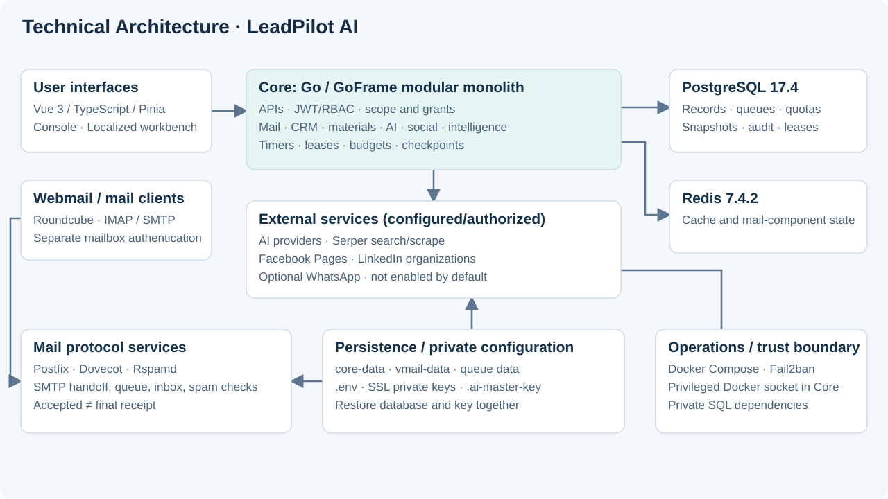
Diagram source: Mermaid architecture.
| Layer | Evidence | Technology and responsibility |
|---|---|---|
| Management UI | core/frontend/package.json |
Vue 3, TypeScript, Vue Router, Pinia; Naive UI components; Vue I18n |
| Frontend tooling | Scripts / pnpm lockfile | Rsbuild, Node.js 22, locked pnpm dependencies, Axios, streamed SSE responses, ECharts |
| Application | core/go.mod |
Module Go 1.22, toolchain 1.23.2, GoFrame v2.9; controllers and domain services |
| Database | docker-compose.yml |
PostgreSQL 17.4: records, authorization, execution state, leases, quota reservations, audit |
| Cache and support | Compose / Redis service | Redis 7.4.2: existing cache and mail-component state; durable tasks are not simply an in-memory Redis queue |
| Outbound mail | Postfix / relay services | SMTP handoff, queue, relay and sender identity; acceptance is not final receipt |
| Mail access | Dovecot / Roundcube | IMAP/POP3, mailbox authentication and storage; Webmail integrates through Core/PHP-FPM |
| Protection | Rspamd / Fail2ban | Spam processing, DKIM configuration and existing access protection |
| External integrations | aimodels, growth, social |
AI providers, Serper search/scrape, Facebook Pages, LinkedIn organizations, optional WhatsApp |
Versions describe code declarations or default Compose values, not necessarily running production images. Provider capabilities, platform approval and API versions require operator verification.
Default Compose defines seven application services: PostgreSQL, Redis, Rspamd, Dovecot, Postfix, Roundcube and Core. Core serves the console/APIs, selected public pages and reverse proxies; mail protocols remain separate.
127.0.0.1:25432; Redis to 127.0.0.1:26379. Do not expose these ports publicly.SafePath is an additional entrance policy, not a substitute for JWT, account state, RBAC, TLS or a firewall.:ro host mount does not make the Docker API read-only; this remains a high-privilege trust boundary.core/frontend/src contains routes, pages, feature modules, stores, the API client and shared components.
router/modules defines navigation; stable identifiers, not localized titles, order menus.router/index.ts checks local session state, loads the server Principal and evaluates page access.features/workspace/api.ts provides department/role context and the permission catalog; buttons are operation-specific.api/index.ts adds Bearer authorization and Accept-Language, and handles business envelopes, downloads, cancellation and errors.{code, success, msg, data}. Hidden buttons are a usability measure; server authorization remains mandatory.Language resources include Chinese, English, Japanese, German, Turkish and Vietnamese. This delivery provides Chinese and English guides, not certification of every translated business term.
| Domain | Responsibility | Location / entry |
|---|---|---|
| Bootstrap and routing | Initialization, model migration, timers, public pages, API registration | core/internal/cmd/cmd.go |
| Governance | Principal, role-bound data scope, shared policies, resource grants, legacy boundaries | service/governance, controller/enterprise |
| Email engine | Campaigns, schedules, automations, API mail, shared quotas, SMTP handoff | service/batch_mail |
| Materials / prospecting | Files, products, extraction, public evidence, contact verification, outreach, inquiries | service/growth; /api/growth/action |
| Intelligence | Industry packs, 14 skills, 6 workflows, approvals, budgets and audit | growth/master_*.go; growth action master |
| Social | OAuth, account grants, content versions, review, scheduling, delivery and metrics | service/social; /api/social/action |
| CRM | Customers, mailbox synchronization, follow-ups, AI drafts, manual replies | service/crm; /api/crm/action |
| AI registry | Unified model references, provider configuration, capabilities, encrypted secrets | service/aimodels, service/aicredentials |
| Mail operations | Domains/DNS, mailboxes, relays, mail statistics, SSL and containers | Related domains, mail_boxes, mail_service modules |
Several domains use action-style POST APIs. Do not infer REST endpoints from menu names. Integrations must use actual request contracts and authorization, rather than directly writing database tables or bypassing reviewed legacy boundaries.
The business-access chain is: entrance policy → JWT validation → account/department/role status → operation permission → data scope → resource/mailbox grant → business-state checks.
Scopes include self, department, descendants, selected departments and all. The scope belongs to the role granting the operation; independently maximizing permissions and scopes across roles can widen access incorrectly. A sending permission is separate from a sender-mailbox grant.
LegacyBoundary restricts ordinary members from legacy administrative APIs whose queries may lack department predicates. Account and role changes affect sessions through token versions and live checks. Background senders re-check authorization rather than relying only on draft creation.
Files use private storage and authorized downloads. External content, filenames, archive paths, URLs and model output are untrusted. Model-generated email addresses are not source evidence, and generated text does not replace approval or authorize contractual commitments.
| Domain | Major entities | Relationships |
|---|---|---|
| Identity / governance | account, role, account_role, bm_departments, bm_resource_grants, bm_send_policies, bm_security_audit |
Accounts, roles, departments, operation scope and grants |
| Contacts / email | bm_contact_groups, bm_contacts, bm_tags, email_templates, email_tasks, bm_campaign_schedules, bm_automation_rules |
Department/owner, audience, template, task and subscription |
| Materials / growth | bm_growth_companies/products/assets/versions, bm_growth_plans/runs/leads/messages/inquiries/jobs |
Approved company versions → execution → evidence → lead → outreach |
| Intelligence | bm_gm_packs/workflows/runs/steps/evidence/prospects/contents/events/usage/audit |
Industry and skill snapshots, checkpoints, approvals, usage and audit |
| Social | bm_social_accounts/plans/variants/deliveries/interactions/metrics/jobs |
Account authorization → reviewed variant → frozen delivery → receipt |
| CRM | bm_crm_customers/messages/followups/mailbox_sync |
Customer, conversation, follow-up and synchronization cursor |
| Mail foundation | domain, mailbox, recipient_info, bm_options, others |
Domains, mailboxes, recipient/subscription and system configuration |
Slash-separated names summarize entity families, not a complete DDL listing. Snapshots, business validation and logical archival also control lifecycle; foreign keys alone do not define deletion behavior.
Private growth storage defaults to core/data/growth-files, overridable with MAPLEMAIL_GROWTH_DATA. The credential master key .ai-master-key resides in the private storage directory. Restore the database together with this key, files, mail data and configuration; restoring only database rows does not restore secret decryption.
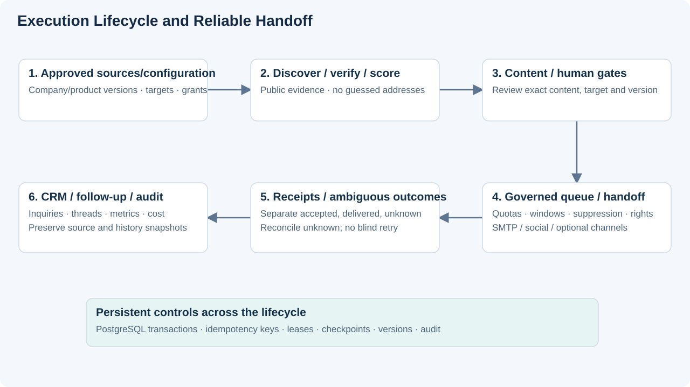
Timers start Growth, Social, email workers, imports, schedules and log aggregation. Database records hold state, checkpoints, quota reservations, unique keys and leases. Claiming commonly uses FOR UPDATE SKIP LOCKED with a unique lease marker.
Limits may apply simultaneously to system, department, mailbox, IP, provider and task. Zero removes only the extra limit at that layer; it does not override higher layers. Transactions and PostgreSQL advisory locks coordinate reservations. Failed attempts can remain conservatively charged.
Ambiguous HTTP/SMTP outcomes remain unknown and require reconciliation before retry. Pausing/canceling usually stops future work, not messages already in Postfix or posts already published externally. Application SMTP acceptance, mail-log delivery and recipient reading are distinct measurements.
The registry centralizes provider name, HTTPS base URL, protocol, model ID, enabled state and declared capabilities: text/chat/vision/image/embedding. Canonical references are ai::<provider>::<model>.
.env, env_init, private certificates, the AI master key or access tokens.See the Operations Guide for deployment, backup, rollback and troubleshooting.
LeadPilot AI | Version 1.0 | 2026-11-14 | Source baseline cf57fb3
The platform connects approved business materials → public evidence → candidate discovery → contact verification → content creation → review and controlled delivery → inbound processing → CRM follow-up and measurement. It does not guarantee transactions or automatically establish legal permission to market.
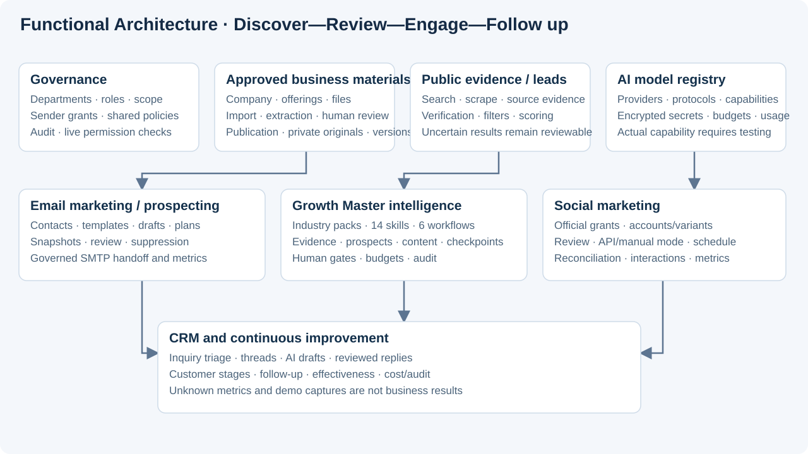
Source: Mermaid functional diagram.
| Domain | Route / entry | Inputs and operations | Outputs and limits |
|---|---|---|---|
| Login / workspace | /login, /workspace |
Account, department, roles, workbench tabs | Server-authorized functionality; administrator/member views can differ |
| Overview | /overview |
Domain, period, mail logs/statistics | Delivery, open, click, bounce and queue metrics; distinguish coverage and unknown values |
| Organization | Workspace departments, members, roles, grants and policies | Department tree, role scope, operation permissions, sender grants | Data isolation, shared limits and audit; role permission is not mailbox authorization |
| Contacts | /contacts or workspace tabs |
Groups, addresses, imports, filters, confirmation/subscription, tags | Audiences, import progress and review; discovery is not marketing consent |
| Templates / email | /template, /market or workspace |
HTML/AI templates, audience, sender pool, subject, policies | Separate tasks, content snapshots, queue and reports; pause does not recall submitted mail |
| Schedules / automation | Workspace tabs, /automation |
Once/daily/weekly/monthly, timezone, subscription-confirmed conditions | Separate runs; controlled sequential rules, not an arbitrary workflow canvas |
| Send API | /send |
Authorized integration credentials, audience and templates | Governed delivery; cannot bypass scope or global limits |
| Materials | /materials |
Company/brand facts, products, files, mapping, extraction and approval | Published facts, versions, private files and review rows |
| AI prospecting | /outreach |
Approved company/products, markets, search, verification, sending policy | Candidates, leads, messages, inquiries and jobs; addresses must appear in real sources |
| Intelligence | /intelligence |
Industry packs, skills, six workflows, quality thresholds and budgets | Evidence, prospect staging, approvals, checkpoints, cost and audit |
| Social marketing | /social |
Official authorization, platform/market/language variants, review and schedule | Deliveries, manual reminders, calendar, interactions and metrics; platform constraints apply |
| CRM | /crm |
Customers, synchronized mail, stages, follow-ups, AI drafts | Inquiries, replies and follow-up; a draft is not a sent reply |
| AI model registry | /settings/ai-model, module AI settings |
Provider, protocol, capabilities, credentials and budgets | Unified options and encrypted secrets; saving settings does not prove a real call works |
| Mail foundation / operations | /domain, /mailbox, /smtp, /logs, /settings |
DNS, mailboxes, SSL, relay, queue, containers and configuration | Mail services and diagnostics; privileged operations need administrator review |
These are source routes, not deployment-specific SafePath entries or published production URLs. Some administrator menus retain legacy pages while ordinary members use scoped workspace views. The User Manual emphasizes the unified workspace lifecycle.
| Responsibility | Suggested duties | Additional checks |
|---|---|---|
| System administrator | Accounts, departments, roles, grants, AI/platform setup, infrastructure | Least privilege, encryption key/backup, global limits |
| Materials maintainer | Business facts, imports, recognition and review | Human-edit protection, sensitive fields, internal/public separation |
| Content reviewer | Publish approved facts, review mail/social versions | Sources, locale, trademark/compliance, unsubscribe and commitments |
| Marketing operator | Audience, drafts, plans, content versions and monitoring | Sender/Page grants, window, budget and customer cooldown |
| Sales/support | CRM, inquiries, follow-ups and reviewed replies | Correct mailbox/customer, sensitive facts, commitments, duplicate replies |
| Auditor/read-only user | Reports, execution state, evidence and audit | Read/export permissions and department scope |
These are recommended responsibilities, not fixed built-in role names. Effective access combines operations, role-bound scope, grants and live account/resource state.
Verification is a time-bound probe, not permanent reachability. Platform/SMTP acceptance is not recipient receipt or reading.
One logical planner coordinates fixed registered skills and immutable run snapshots. Each skill supports enabled state, model, timeout, retries, item limit and output budget.
| ID | Skill | Quality gate |
|---|---|---|
| S01 | Global News Monitor | Public sources and coverage |
| S02 | Market Trend Analyst | Existing citations and explicit uncertainty |
| S03 | Product Hotspot Detector | Observations are not sales statistics |
| S04 | Purchase Intent Detector | Dated source evidence |
| S05 | B2B Company Finder | Public website and deduplication |
| S06 | Contact Intelligence | Contact must appear in source |
| S07 | Data Cleaner | Separate verified, invalid, uncertain and filtered |
| S08 | Lead Scoring | Missing facts score zero; record rule version and breakdown |
| S09 | Product Matching | Approved offerings and supported conditions only |
| S10 | AI Content Creator | Review exact target/content before first contact or publication |
| S11 | Campaign Orchestrator | Approval, rights, suppression, budget and resource grants |
| S12 | Reply Intelligence | Classification/drafts; no unauthorized contractual commitments |
| S13 | Growth Analytics | Unavailable measurements remain unknown |
| S14 | Data Sync & Audit | Scoped, deduplicated CRM links and audit |
| Workflow | Skill sequence | Purpose |
|---|---|---|
| WF01 | S01 → S02 → S03 → S14 | Industry/market observation and hotspots |
| WF02 | S04 → S05 → S06 → S07 → S08 → S09 → S14 | Purchase-intent-driven discovery and qualification |
| WF03 | S05 → S06 → S07 → S08 → S09 → S14 | Public B2B company/contact discovery |
| WF04 | S10 → S11 → S14 | Multilingual content, approval and channel handoff |
| WF05 | S12 → S08 → S09 → S14 | Inbound understanding, opportunity scoring and follow-up |
| WF06 | S13 → S02 → S14 | Daily effectiveness, cost and improvement analysis |
Industry packs define product/service type, terminology, buyer types, intent/exclusion words, fields, score weights, confidence and forbidden claims. AI keyword expansion needs explicit selection and is not evidence of a purchase.
Controlled waiting states include waiting_approval, waiting_external, configuration_required and budget_exhausted. Resolve the specific cause before resuming. Creating a pack does not enroll existing production plans automatically.
Approved company/task materials → content variants → platform/account/market matching → review → scheduling → live grant/budget checks → external submission → reconciliation → interactions and official metrics.
unknown; task deletion does not delete existing external posts.—, not zero. Adding per-post reach does not measure unique people.Confirmation, subscription, active status, verification and marketing permission are different properties. Importing confirmed contacts can trigger enabled subscription automation, so review the import status deliberately.
Automations use ordered conditions such as wait, always send, previous message opened/clicked/not opened. They normally enroll newly confirmed contacts after rule creation. Tracking may be influenced by privacy proxies or security scanners.
Schedules use timezones and overlap protection. Downtime recovery is not bulk replay of every missed date. Revoked rights/grants, changed department ownership and unsubscribe affect future work.
| Area | Minimum verification | What this documentation proves |
|---|---|---|
| UI | Routes, components, language and visible controls | Real frontend screenshots with fictional data, not backend integration |
| Rights | Department isolation, role scope, downloads, worker re-checks | Describes implementation; production checks still required |
| Controlled mailbox, final receipt, unsubscribe, bounce and unknown | No real customer mail sent in this documentation task | |
| AI/search | Protocol, credential, budget, citations and errors | No paid provider calls in this task |
| Social | Official authorization, approval, API/manual mode, reconciliation | No live authorization or publishing in this task |
| Operations | Private SQL, master key, complete backup and restore drill | Procedures only; production services were not modified |
See the User Manual and Operations Guide for procedures, interface illustrations and troubleshooting.
LeadPilot AI | English edition | Version 1.0 | 2026-11-14
Procedures describe source baseline cf57fb3. Screenshots render real application components in headless Microsoft Edge using an existing local frontend build and fictional demonstration data. They do not connect to production or use actual accounts, customers, tokens or commercial records. Every image is labeled as a demonstration. Metrics, example.com / example.org addresses and companies are not business results.
These are not hand-drawn interface prototypes, but neither are they production evidence or backend integration tests. Build fingerprint, source baseline, capture inventory and browser-error results are recorded in assets/screenshot-provenance.json. Controls vary with version, language, permissions and configuration.
Operating rule: save a draft, review it, then execute; reconcile uncertain external submissions before retrying. This documentation task sent no customer mail, published no social content and made no paid AI/search calls.
| Order | Action | Completion criterion |
|---|---|---|
| 1 | Verify HTTPS, administrative entrance, services and private backups | No shared default password; database and Redis not public |
| 2 | Configure departments → role scopes → members | Ordinary users cannot access unrelated departments or system APIs |
| 3 | Grant senders and configure shared policies | Explicit authorization, limits and a controlled test mailbox |
| 4 | Configure DNS, SSL and SMTP/relay | Final send/receive verified using owned test mailboxes |
| 5 | Configure AI providers, capabilities and budgets | Minimal real provider test; secrets never returned in plaintext |
| 6 | Create company/product/material records, review and publish | Supported facts; internal sensitive data excluded |
| 7 | Import a small contact sample and review status | Lawful source, confirmation, subscription and filtering understood |
| 8 | Create a draft or plan with automatic sending disabled | Evidence, content, targets and budget reviewed |
| 9 | Approve and test only with controlled targets | Receipt, unsubscribe, replies and metrics verified |
The public repository intentionally excludes SQL, runtime secrets, private keys and installation packages. Prepare matching private SQL dependencies according to the Operations Guide; cloning GitHub is not application installation.
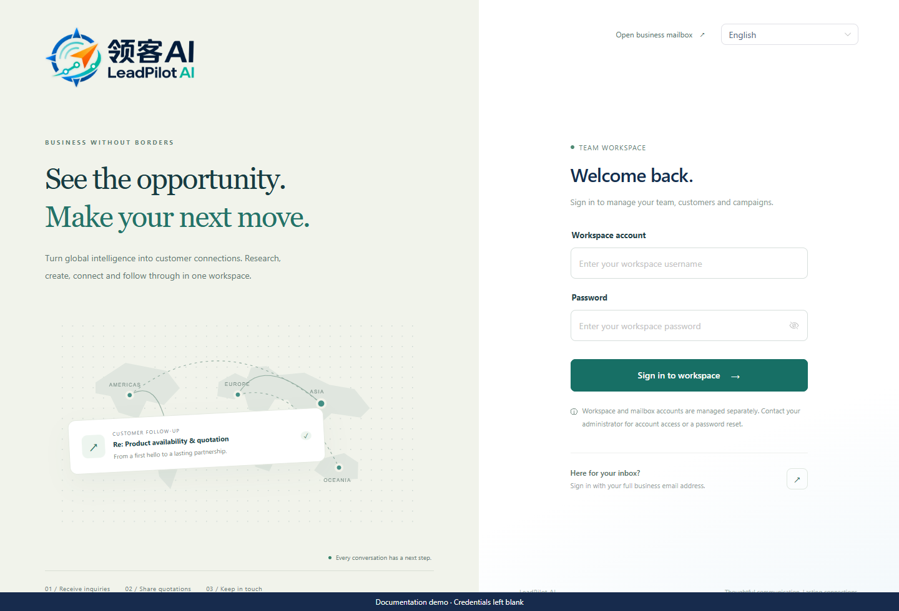
Tab state is not proof unsaved edits were persisted. Browser reload, page refresh and executing a task are different operations.
Open Department Workspace → Department. Add the name, parent and enabled state, then save. Establish the tree before assigning members so data ownership is clear.
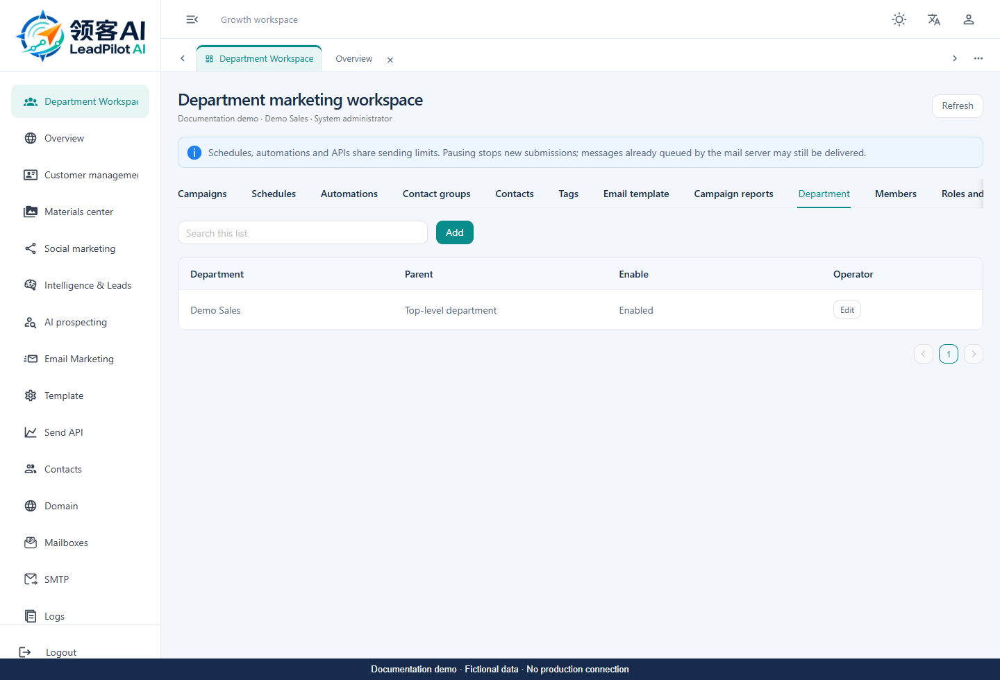
Open the role-management tab and configure a role name, operation permissions and data scope. Start with the smallest scope; expand only where justified.
Create, edit, delete, import, export, publish and settings permissions are separate. Read permission alone does not authorize publishing.
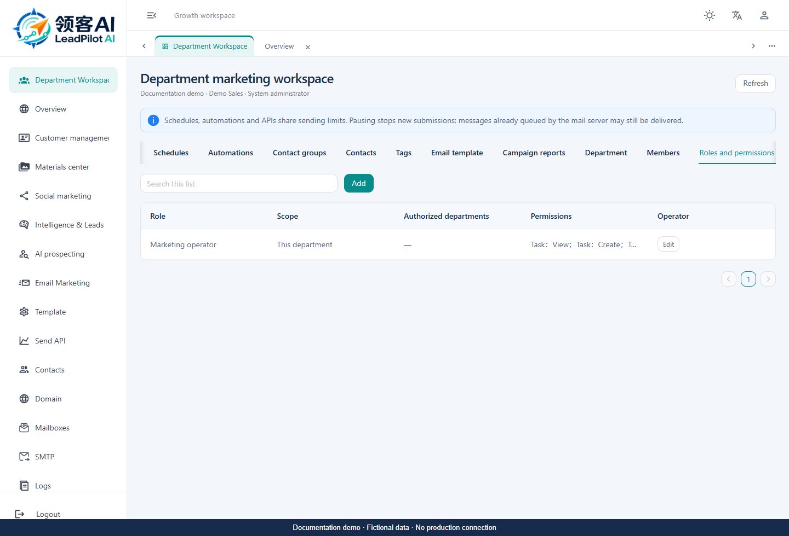
Disabling a member/department does not remove historical records. Moving members does not migrate all historical ownership; existing tasks may stop because ownership no longer matches.
Use Domain to maintain the mail domain, hostname, mailbox limits and related settings. Follow the system's actual records for MX, A, SPF, DKIM and DMARC. Operations staff must also validate PTR/outbound IP and provider SMTP restrictions.
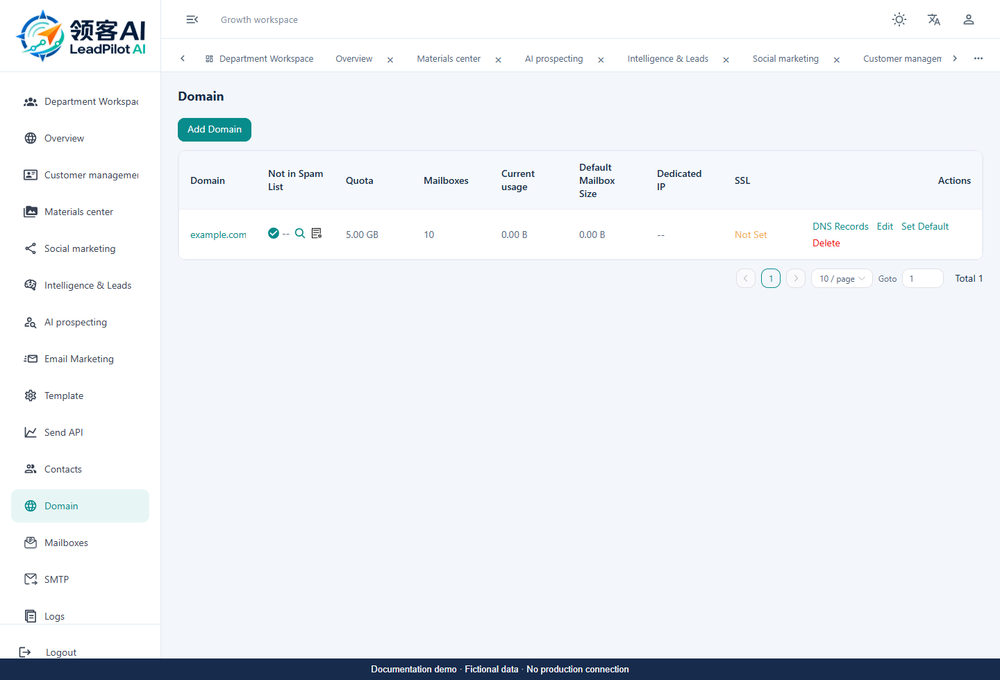
Use a single appropriate SPF record, verify signatures and DMARC alignment, and avoid increasing volume before deliverability is validated. TLS private keys remain private and must not be committed.
Use Mailboxes, choose the domain and create individual or batch mailboxes with quota, active status and a password.
DEFAULT_NEW_MAILBOX_PASSWORD is configured correctly. Otherwise creation is rejected.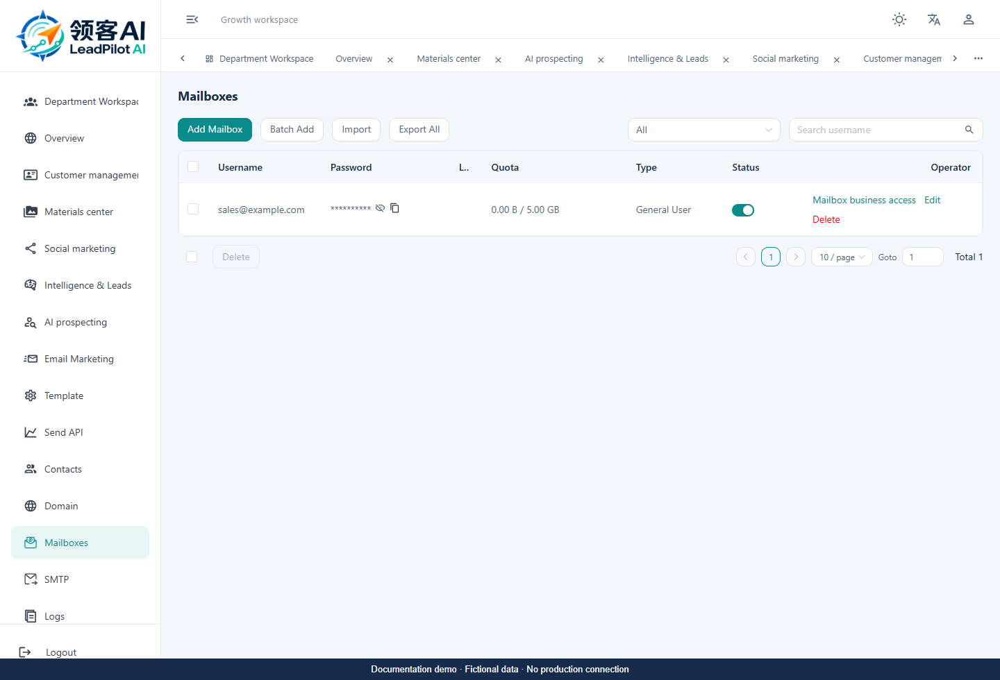
Test with owned mailboxes: SMTP handoff, final receipt, IMAP/Webmail access and replies. An accepted submission alone does not establish inbox receipt.
Open Settings → AI model service. Social/prospecting settings also expose related entry points; runtime choices come from the shared registry.
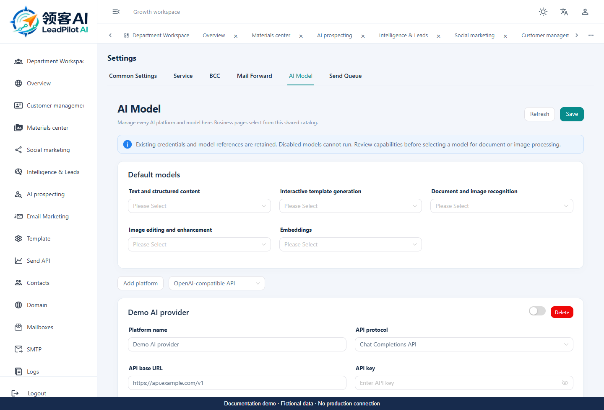
Vision, PDF input, image generation and web search are distinct features. Do not assume a chat-only model accepts PDFs. Provider claims, registry declarations and real behavior all need verification.
Open Materials center and select a company or create a draft. Record brand, domains and supported product/service facts.
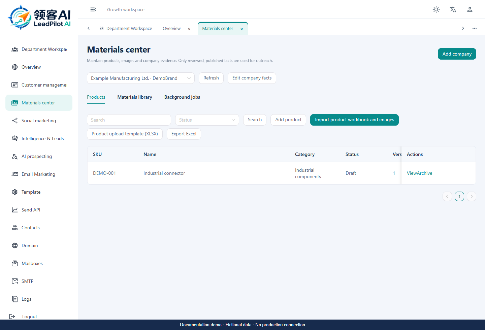
Review names, business scope, contacts, promises and evidence before publishing. Only approved external facts should enter automated marketing. Shared departments read approved records within grants; internal files do not become public automatically.
Archives must not contain path traversal, private keys, database backups or sensitive internal documents. Company uploads, product import and social task files have different format/size limits; use the current module's rules rather than one assumed global limit.
For supported PDFs, Office documents or images, explicitly permit recognition and select an appropriate model. Review extracted facts, citations and uncertainties before merging into a draft. Cost, bank, credential and internal procurement fields must not become external copy. Published versions remain traceable; material changes can invalidate unsent outreach snapshots.
Business members can use workspace contact groups, contacts and tags. Administrators may also see separate Contacts pages.
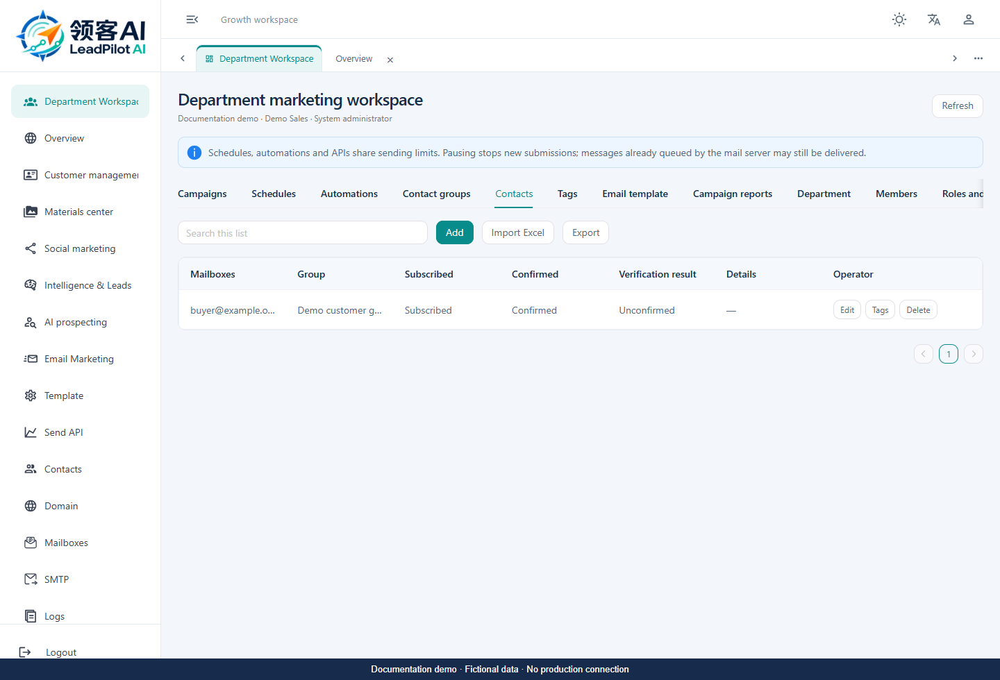
Create a template in Template or the workspace template tab. Edit HTML or use AI assistance. Preview layout, links, brand, formatting and unsubscribe. Use merge-variable syntax actually supported by the page; this guide does not invent variable names.
Open Department Workspace → Campaigns and create a new task:
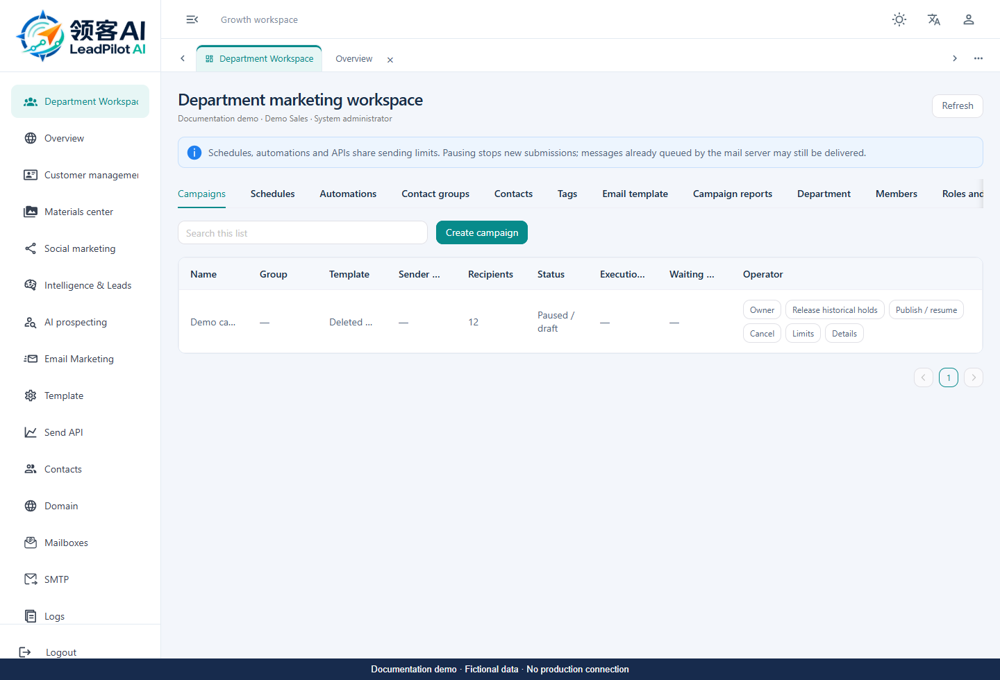
unknown means submission cannot be confirmed. Check queue/logs before sending again.Once/daily/weekly/monthly schedules run in the configured timezone and create separate tasks. Review month-end and DST behavior. Recovery does not replay every missed historical date in a burst.
Subscription automations are ordered steps: wait, always send, previous message opened/clicked/not opened. Edits affect new enrollment while existing runs retain snapshots. Validate using test contacts before enabling real rules.
Open AI prospecting after reviewing and publishing company/product materials.
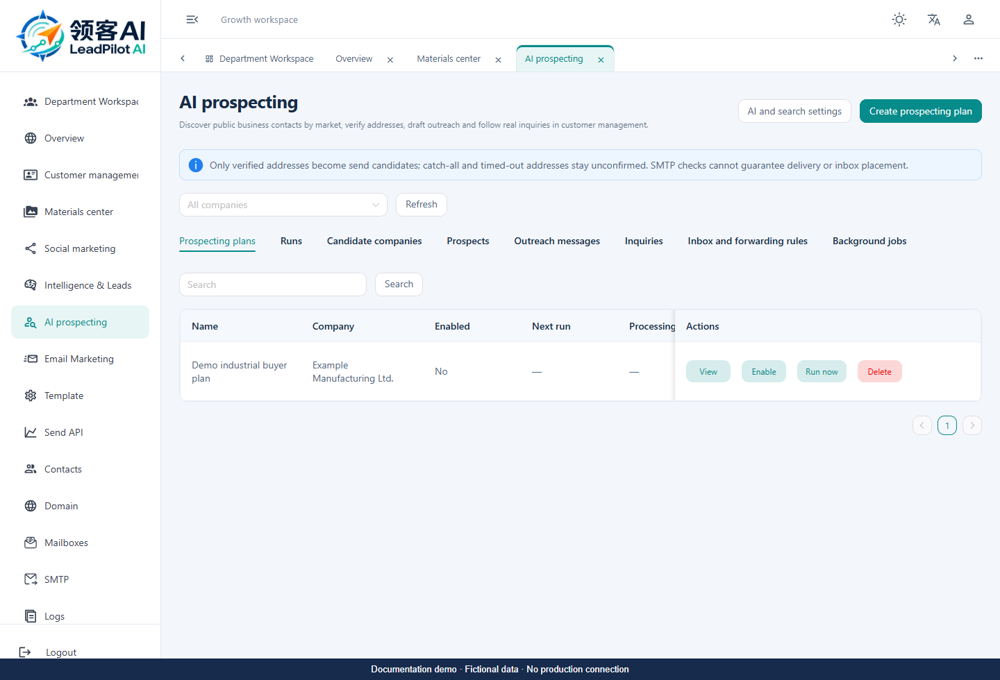
Plan changes can pause it by default. Revocation, source changes, unsubscribe, replies and cooldown affect later handoffs. A completed discovery run does not mean mail was sent or a sale occurred.
Open Intelligence & Leads and choose a company. It is a controlled industry-pack/14-skill/6-workflow system, not an arbitrary node editor.
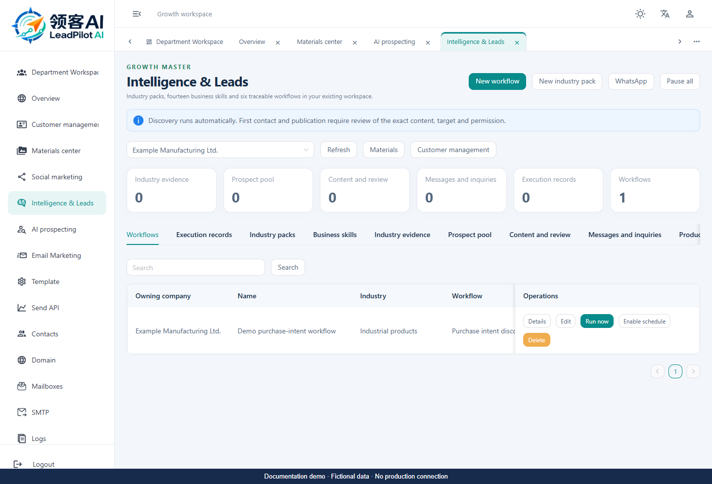
Create or clone a pack. Configure product/service type, terms, buyer/intent/exclusion words, sources, schema, scoring, minimum score/confidence and forbidden claims. Clone system templates before customizing. Confirm AI-expanded terms explicitly.
Choose skill-specific models and item/output/timeout/retry limits. Verify search, verification, materials and channel capabilities before granting broad budgets.
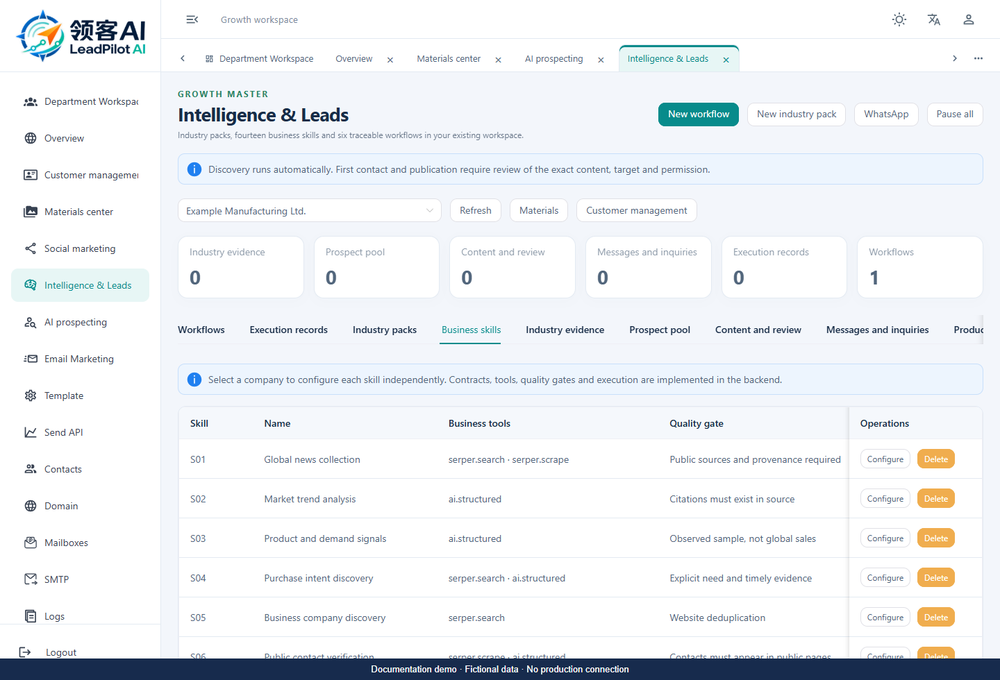
Open Social marketing. Prepare approved company facts and official platform authorization before moving from draft to review and schedule.
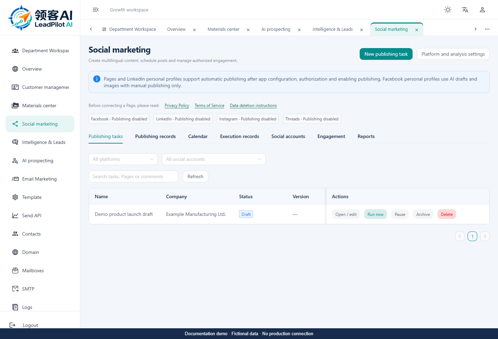
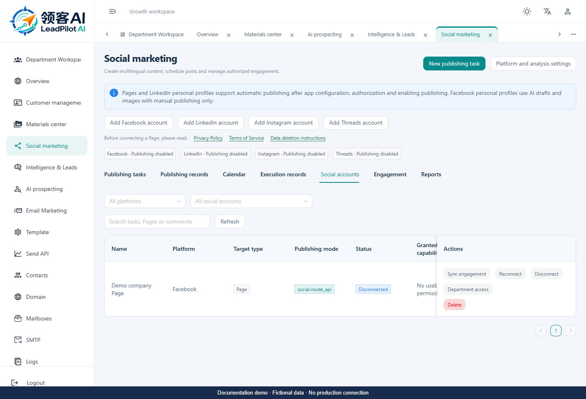
Create a task with company, platform, country, language, account and local time. Select/upload approved sources, generate or write variants, and review links, images, paragraphs, translation and factual claims. Content edits require renewed review. A task can match multiple accounts across market variants.
Country/language selection is content localization, not advertising geo-targeting. Task-only files and published materials have different lifecycles; archival into Materials center is explicit.
Schedule approved content and verify timezone/DST. API mode hands off to authorized platform APIs. Manual mode requires the operator to actually publish on the platform and then confirm in the interface; that confirmation is not automatic-publication proof.
For timeout/unknown results, verify actual post ID and ownership before retry. Deleting task/record does not remove an external post. Reconnect expired/revoked authorization instead of fabricating a successful status.
Local refresh reads stored state; platform synchronization fetches official measurements. Review update time, coverage and —; missing is not zero. Respect platform rules for member data, comments, AI use and retention. This guide provides no unrestricted auto-comment, advertising or video-publishing procedure.
Open Customer management to search authorized customers, stages and follow-up dates.
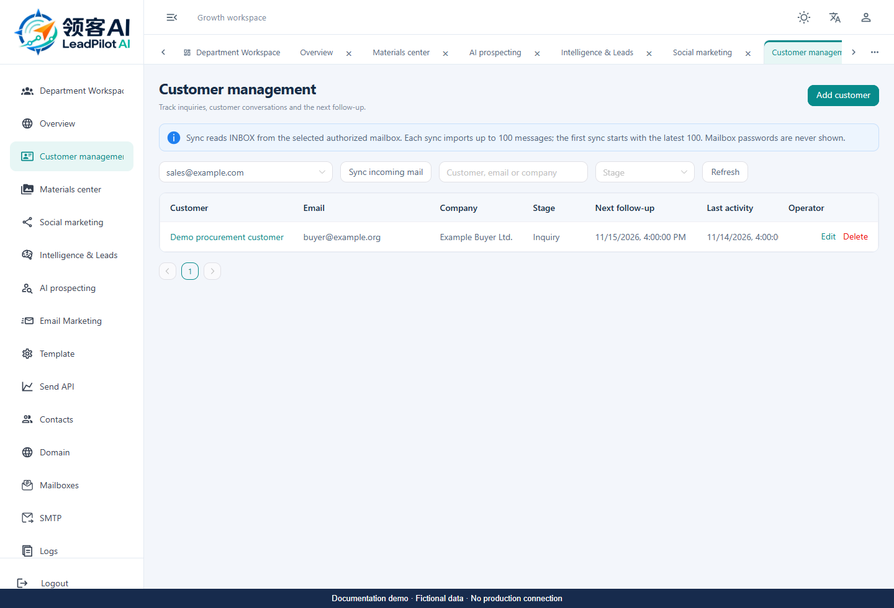
Choose domain/period in Overview and correlate task statistics, mail-server logs, bounce, tracking coverage and queue state.
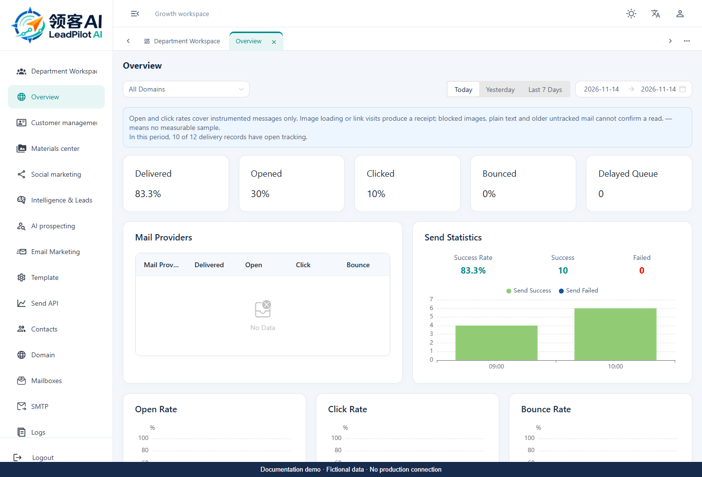
Daily review should include pending/unknown work, approvals, exhausted budgets, expired grants, bounce anomalies, unsubscribe, customer follow-ups, disk capacity and backups. Exports require permissions; customer details must not be published to GitHub.
| Symptom | Check first | Avoid |
|---|---|---|
| Missing menu/button | Operation rights, scope, resource grant, account status | Guessing legacy APIs or bypassing UI |
| New mailbox rejected | Password rules; private fallback for empty API input | Restoring a hardcoded shared password |
| Model unavailable | Enabled provider, key, protocol, capability, budget | Treating save as a working provider test |
| Lead not sent | Source/verification freshness, subscription, suppression, cooldown, plan | Marking uncertain addresses verified by force |
| Long pending state | Shared limits, windows, grants, logs and queue | Raising concurrency or duplicating tasks blindly |
| Social submission blocked | Approved app, mode, granted rights, reviewed version, token | Inventing a post ID |
| Unknown state | External receipt and worker/mail logs | Retrying before reconciliation |
| Secrets fail after restore | Matching database and .ai-master-key |
Restoring only DB or overwriting the key |
| Public clone cannot compile | Private SQL, dependencies, frontend output/configuration | Force-adding secrets or private scripts |
Report the level of success: saved, verified, queued, externally accepted, finally delivered, or business-confirmed. Production acceptance still requires isolated rights tests, controlled delivery, unsubscribe, replies, official platform authorization and unknown recovery. Screenshots and this manual do not substitute for those checks.
LeadPilot AI | English Operations Guide | Version 1.0 | 2026-11-14
These are procedures, not evidence that production deployment, backup or recovery was performed in this task. Examples run from the project root and retain actual Compose service identifiers. Production changes require a verified target, backup, maintenance window and rollback owner.
GitHub contains source, documentation, fictional-data screenshots and the explicitly requested PDFs. Normal application packages, archives, build output, runtime data, SQL, private keys and credentials remain ignored. The PDFs are authorized documentation deliverables, not application installers.
A public clone alone cannot build the backend. Source embeds ignored private SQL at:
core/internal/service/governance/: migration.sql, growth.sql, delivery.sql, statistics.sql, social.sql, master.sql.core/internal/testsupport/: base.sql.Initialization inputs, environment, certificates and existing deployment settings are privately managed. Supply files matching the selected source version at their original paths. Do not disguise SQL under another extension. A source archive is not a complete runnable backup.
Start in an isolated Linux/Docker environment with Docker Engine/Compose, Node.js 22, pnpm compatible with the lockfile, and Go 1.23.2. A native Windows Go build does not establish a functioning Linux mail stack.
git clone https://github.com/dwjacken-star/LeadPilotAI.git
cd LeadPilotAI
git log -1 --oneline
.env.example to .env and privately fill administrator/database/Redis values. Do not overwrite an existing production environment.Empty-password mailbox requests use private DEFAULT_NEW_MAILBOX_PASSWORD only when configured. Otherwise they fail. Never restore a hardcoded shared source password.
cd core/frontend
pnpm install --frozen-lockfile
pnpm build
pnpm i18n:check
pnpm test:workspace
pnpm test:repair
cd ../..
Output is core/frontend/dist; the Dockerfile copies it to Core's public resources. build:git contains Git/asset-copy behavior and build:deploy invokes deployment code. For build-only validation use build, not a deployment shortcut.
Provide the private SQL first, then explicitly build the production entry point:
cd core
go mod download
go build -mod=readonly -trimpath -o ../.tools/leadpilot-core main.go
go test ./internal/service/mail_boxes ./internal/controller/mail_boxes ./internal/controller/settings
cd ..
Development entry files exist; do not compile multiple main files inadvertently with go build .. Database integration tests create/delete disposable databases when BM_TEST_PG_HOST and related variables are supplied. Use only an isolated test instance with appropriate privileges, never production. Skipped tests are not full verification.
node --test scripts/check-publish.test.cjs
git ls-files -ci --exclude-standard
node scripts/check-publish.cjs
The checker examines staged blobs and is not a comprehensive security audit. Simple hardcoded strings, customer privacy and screenshot content still need human review.
Default Compose references an upstream Core image. Customized code uses the project override:
docker compose -f docker-compose.yml -f docker-compose.enterprise.yml config --quiet
docker compose -f docker-compose.yml -f docker-compose.enterprise.yml build core-billionmail
After approval, a complete backup and matching private script verification, deploy/update in the agreed window:
docker compose -f docker-compose.yml -f docker-compose.enterprise.yml up -d
These commands were not executed by this documentation task. An upgrade is not a fresh installation: preserve environment, database, mail storage, Postfix queue, materials, master key, old image and grants. Do not run down -v or replace the customized Core using an upstream update shortcut.
Avoid simultaneous old/new send schedulers. Switch Core under the change plan and verify migration/leases. Adding replicas alone is not high availability.
Read-only examples:
docker compose ps
docker compose logs --tail=120 core-billionmail
docker compose logs --tail=80 pgsql-billionmail
docker compose logs --tail=80 postfix-billionmail
docker compose logs --tail=80 dovecot-billionmail
docker compose logs --tail=80 rspamd-billionmail
Logs can contain internal email addresses, paths or request details. Redact before sharing; do not upload raw logs to GitHub.
Minimum acceptance:
Include PostgreSQL, private environment/configuration, SSL keys/certificates, core-data including materials and .ai-master-key, mailbox data, applicable queues, previous image and version metadata.
The example below is a database logical backup only, not a complete system backup:
umask 077
BACKUP_DIR="backup/manual-$(date +%Y%m%d-%H%M%S)"
mkdir -p "$BACKUP_DIR"
docker compose exec -T pgsql-billionmail sh -c \
'exec pg_dump -Fc -U "$POSTGRES_USER" "$POSTGRES_DB"' \
> "$BACKUP_DIR/database.dump"
test -s "$BACKUP_DIR/database.dump"
docker compose images > "$BACKUP_DIR/images.txt"
git rev-parse HEAD > "$BACKUP_DIR/source-version.txt"
File/mail/queue backups must use the actual persistent paths and a consistency strategy for writes. Use an approved maintenance window or consistent snapshot; an arbitrary copy of changing directories is not a complete consistent backup.
Upgrade sequence: identify version → complete backup → stop old Core from new handoffs → update matching frontend/backend/private SQL → check additive migration → verify scope/data/queue → controlled test delivery → resume business.
Pause external tasks before rollback and record ambiguous submissions. Restore application and matching data/configuration using a rehearsed plan. Rolling back only the application while retaining new department accounts may expose old code without modern access boundaries; control accounts/API rights first. Do not automatically drop databases or perform destructive restore without explicit approval.
Stopping/rolling back does not recall queued mail or external posts. Reconcile unknown records separately to avoid duplicate sending after recovery.
| Problem | Diagnostic order | Principle |
|---|---|---|
| Startup failure | Private SQL/config → DB connection → migration → Docker socket → logs | Keep evidence; do not bypass failed migration |
| Login/access | HTTPS/SafePath → account → token → department/roles → legacy boundary | Do not grant everything to make an error disappear |
| Blank frontend | Entry/chunk consistency → browser error → API envelope → cache/version | Preserve reproducible evidence; do not call it a login success |
| Mail stalled | State/grants → higher limits → window → SMTP/queue → bounce → network policy | Separate accepted and delivered |
| AI/search failure | Protocol/model → endpoint → private secret → budget → parsing/evidence | No fabricated response or unlimited retry |
| Social blocked | Approved app → account mode → grant/token → reviewed content → 429/unknown | Apply platform backoff; reconcile unknown |
| Decryption after restore | Matching DB/master key, storage path and permissions | Do not overwrite or disclose the key |
| Disk pressure | Data/log/queue/upload use and retention | Do not delete real mailboxes/queues as an emergency shortcut |
With Playwright Core, a supported browser, frontend dependencies and a local frontend build available:
node scripts/docs/generate-diagrams.cjs
node scripts/docs/capture-ui.mjs
node scripts/docs/build-handbook.cjs
python scripts/docs/validate-handbook.py
PLAYWRIGHT_MODULE selects the Playwright Core module file; DOC_BROWSER selects a local Chromium/Edge executable. Default tool paths describe the generation environment; configure them explicitly on another computer and never commit browser/dependency directories.
Captures intercept fictional APIs and restrict requests to local resources; they do not access production. Markdown and diagram sources remain independently readable without PDF tooling.
Validate links, images, PDFs and sensitive information before publishing. Verify screenshots contain no real customers, staff, tokens, private keys, private email content or financial records.